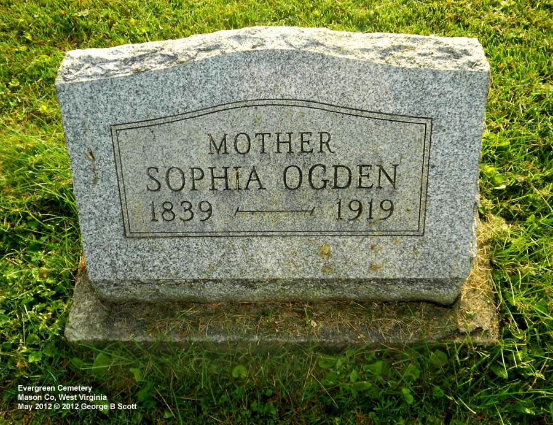

Harriett Sophia Rine
12 August 1839 – 13 January 1919
Rine line · Letart, Mason County, West Virginia
Profile status: DOCUMENTED
Quick Facts
Born
12 August 1839, Mason County, Virginia DOCUMENTED (West Virginia death certificate, Reg. No. 72, read directly; the 1850 census age 11 agrees; the 1879 license age 37 implies about 1841–42 — the outlier)
Died
13 January 1919, Letart, Mason County, West Virginia DOCUMENTED (same certificate; an old compiled account's 12 Jan 1918 is CONTRADICTED — wrong year AND day; cause of death open — the certificate's medical section is blank except a large “154” notation)
Married (1)
Weston Polsley — TWO licenses
DOCUMENTED: license 1, 12 Dec 1859, “H. S. Ryan, daughter of George Ryan”, Jackson County (license-log p. 134, image read); license 2, “H. S. Rine, daughter of George Rine”, UNDATED on the image (p. 137); ceremony 17 Mar 1860, an old compiled account only — UNPROVED; FamilySearch/WikiTree “12 Feb 1860” is index-derived, UNPROVED — almost certainly the preceding Harford entry's date
Married (2)
Nelson Green Ogden, 21 April 1879, Mason County, by A. C. Beckley DOCUMENTED (license 18 Apr 1879, Mason County p. 76, image read; an old compiled account's “never remarried” is CONTRADICTED). Nelson: born about 1841–45, Harrison County, Virginia; died 1917, Letart, dropsy, age 74y 5m 18d — SUPPORTED; parents OPEN (live candidate William Ogden × Sarah McIntire, UNPROVED); a second Nelson Ogden (Millwood, died 1917, heart) must not be merged
Buried
Letart, 15 January 1919 DOCUMENTED (certificate + register; the register has NO death date or cause). Two stones at Evergreen: the shared Weston/Sophia stone 4079 (“SOPHIA OGDEN / 1839 — 1919”, SUPPORTED, lichen-obscured) and her separate crisp stone 4082 (“MOTHER / SOPHIA OGDEN / 1839 — 1919”, DOCUMENTED) — the 4082 stone is the hero
Immediate Family
Parents
George A. Rine ×
Nancy Litten DOCUMENTEDGeorge's 1857 will (Jackson Will Book v.02 p. 72, signed 22 Aug 1857, probated Aug 1861) names “Harriet S. Rine”, $200 + remainder share. George: born about 1791, Maryland (1850 census + death certificate agree; the tree's Virginia likely wrong); died 16 Feb 1861, Jackson (emerging best value; the register says 16 Feb 1860 but the 5 Jun 1860 census shows him alive — register year contradicted; the original handwritten Jackson death register is the arbiter); married Nancy Litten 25 Dec 1821, at his father's house in Warren Twp., Jefferson Co., Ohio, by John Barrett, Justice of the Peace — DOCUMENTED. George's parents Michael Rine × Eleanor Smith — OPEN/UNPROVED (WikiTree only). Do NOT merge George A. Rine with Rine-104 (George A. Rine b. May 1851 Jackson, WV, d. Jun 1900 St. Louis, MO — a younger namesake). Nancy: born 1801; died 14 Dec 1875 (VRR detail Id=5274861, Cooper District, Mason; age 74y 8m 1d; born Pennsylvania; parents Sam Litton & Heather Litton as indexed) vs 14 Dec 1874 (stone + WikiTree) — year-header check open; birthplace Virginia (1850 census, leads) vs Maryland (death certificate) vs Pennsylvania (tree + index) — unresolved; WikiTree names her mother “Helen Walker” — a new lead needing a primary source.
Spouse
Weston Polsley (born 17 April 1833; died 28 January 1872 — obituary leads; Find a Grave 29 Jan), married (two licenses 1859/1860, ceremony 17 Mar 1860, an old compiled account only)
DOCUMENTED (licenses)
Weston died 28 January 1872; the 29 January date on Find a Grave is the rival reading and the obituary leads.
Second Marriage
Nelson Green Ogden (born about 1841–45, Harrison County, Virginia; died 1917, Letart, dropsy, age 74y 5m 18d
SUPPORTED; parents OPEN), married 21 April 1879, Mason County, by A. C. Beckley
DOCUMENTEDChild of this marriage: Rose Estella Ogden Mason (born 11 Oct 1880; died 17 May 1971 — DOCUMENTED, death certificate No. 71006842; father Nelson Ogden, mother Harriett Rhine). Rose is NOT Weston's daughter. Nelson's parents are OPEN — live candidate William Ogden × Sarah McIntire, UNPROVED; the second Nelson Ogden of Millwood (died 1917, heart) must not be merged.
Children
Frank E. Polsley (born 14 Feb 1861; died 14 Mar 1903, Cincinnati, Hamilton Co., death register v.2 p.99, age 42, married, buried Spring Grove Cemetery; married Flora Bozell 28 Jan 1891, Hamilton Co.; possible second marriage to Katie B. in 1896 is an open lead)
SUPPORTED (1870 census: Frank E. 9 in the household)
Walter W. Polsley (born 10 Dec 1862; died 11 Feb 1948; married Esther Donie Skeen 25 Dec 1895, license 23 Dec 1895, by John W. Skeen, at the Skeen residence, Jackson Co.)
DOCUMENTEDEmma Gertrude Polsley (born 27 Dec 1864; married William Henry Frantz Theodore Rambow, license 27 Sep 1887; groom 28, b. Mecklenburg, Germany, resident Meigs Co., Ohio; stones “EMMA G. / RAMBOW / 1864–1947” and “WILLIAM H. / RAMBOW / 1859–1936” DOCUMENTED)
SUPPORTEDJohn D. Polsley (born about 6 Dec 1866 by stone age arithmetic; died 20 June 1868 stone vs 17 June 1868 register, cause diphtheria, informant Weston Polsley)
SUPPORTEDGeorge James Polsley (born 20 Apr 1868; died 25 May 1938, Wood Co.; married Florida Brinker Dec 1897, likely Alabama, no WV record; second marriage Rhesa J. Greer 1931, Mason; parentage DOCUMENTED — his own state death certificate names Weston Polsley × Sophia Rine)
SUPPORTEDJenny Polsley (born 7 Apr 1870 — name UNPROVED: five names, one child — Mary 1870 / Gennie 1880 / Julia M. 1900 / Jenny in an old compiled account / Eliza Virginia FamilySearch tree)
UNPROVEDMyrtle Polsley (born and died 19 Jul 1872 / 19 Jul 1900, teacher, parents W. × H. S. Polsley, Mason death register, VRR Id=5268906; died on her 28th birthday)
DOCUMENTEDWalter is the direct line. The 1900 census gives Harriet 8 children born / 7 living — fitting the seven Weston children + Rose Ogden Mason (Harriet's daughter by her second marriage), John D. the one dead.
Siblings
John Long (Rine-88; born about 1823 — “Jno Ryan” 27 next door in the 1850 household, plausibly John Long, a lead not a finding)
SUPPORTEDGeorge Washington (born about 1821 — “Washington” 29 in 1850, Boatman, born Ohio)
SUPPORTEDMichael B. (born 8 Sep 1827; died 17 Feb 1894, stone DOCUMENTED; first wife Rebecca Ann died 6 Aug 1856; second wife Matilda died 19 Nov 1922)
SUPPORTEDHelen (born about 1830 — “Hellen” 20 in 1850, born Ohio)
SUPPORTEDSamuel Marshall (born about 1831 — “Samuel” 19 in 1850, born Virginia)
SUPPORTEDWilliam Henry L. (born about 1833 — 27 in 1860; the 1850 “Phillip(s) 17” was a misreading of him — conflict #23 RESOLVED)
SUPPORTEDGeorge × Nancy's seven children incl. Harriet. WikiTree carries seven children incl. William Henry; the 1850 household's “Phillip(s)” is resolved to William Henry L. Rine. No sibling has a page of their own, so no sibling name is linked here.
On Family Tree Sites
Life Timeline
12 August 1839 · age 0
Born, Mason County, Virginia DOCUMENTED (West Virginia death certificate, Reg. No. 72)
1850 · age 11
Census, Jackson County, dwelling 599, family 605: George Ryan 59, Nancy 49, Washington 29, Michael 22, Hellen 20, Samuel 19, Phillip(s) 17, Harriet 11 DOCUMENTED (image read)
12 December 1859 · age 20
Marriage license 1: “H. S. Ryan, daughter of George Ryan”, Jackson County, license-log p. 134 DOCUMENTED (image read)
Undated, 1859–1860 · age 20
Marriage license 2: “H. S. Rine, daughter of George Rine”, Jackson County, p. 137 DOCUMENTED (image read; no date on the image)
17 March 1860 · age 20
Marriage ceremony to Weston Polsley, an old compiled account only UNPROVED
1870 · age 30
Census, Cooper District, Mason County: “Wesley” Polsley 37, Harriet S. 30, Frank E. 9, Walter W. 7, Emma G. 5, George 3, Mary 9/12 DOCUMENTED (image read)
28 January 1872 · age 32
Weston Polsley dies SUPPORTED (obituary leads; Find a Grave 29 Jan)
21 April 1879 · age 39
Second marriage to Nelson Green Ogden, Mason County, by A. C. Beckley DOCUMENTED (license 18 Apr 1879, Mason County p. 76, image read)
1880 · age 40
Census, Mason County: Sophia Ogden 40, wife of Nelson, Frank, Walter, Emma, George, Gennie 10, Myrtle 8 DOCUMENTED (image read)
1900 · age 60
Census, Nelson × Harriet household: 8 children born / 7 living; “Julia M.” step-daughter 27; Matilda Rine and Frank B. Catsley in the household DOCUMENTED (image read)
1910 · age 71
Census: Harret S. 71, married 31 yrs DOCUMENTED (image read)
13 January 1919 · age 79
Died, Letart, Mason County, West Virginia DOCUMENTED (West Virginia death certificate, Reg. No. 72)
15 January 1919
Buried, Letart DOCUMENTED (certificate + register; the register has NO death date or cause)
Life Story
Harriett Sophia Rine was born 12 August 1839 in Mason County, Virginia, the daughter of George A. Rine × Nancy Litten — DOCUMENTED by her father's 1857 will, which names “Harriet S. Rine” and leaves her $200 plus a remainder share. Her father George, born about 1791 in Maryland, married Nancy Litten on 25 December 1821 at his father's house in Warren Township, Jefferson County, Ohio; the 1850 census finds the family in Jackson County, Harriet aged eleven among her brothers and sisters. Her parents' own parentage stays open: George's parents Michael Rine × Eleanor Smith rest on WikiTree only, and Nancy's maiden name is carried as Litten with several spellings on record.
Harriet married Weston Polsley, and the marriage itself is a small puzzle: two Jackson County licenses survive — 12 December 1859, naming “H. S. Ryan, daughter of George Ryan”, and an undated one naming “H. S. Rine, daughter of George Rine” — with the ceremony dated 17 March 1860 in an old compiled account only. Seven children followed: Frank E., Walter W., Emma Gertrude, John D., George James, Jenny, and Myrtle. Walter, born 10 December 1862, carries the line. The 1870 census finds the young family in Cooper District, Mason County; John D. died of diphtheria in June 1868, still a small child, and Weston himself died on 28 January 1872, leaving Harriet a widow with six living children.
Harriet married again. On 21 April 1879 in Mason County she married Nelson Green Ogden, by A. C. Beckley — DOCUMENTED by the license of 18 April 1879 — and a daughter, Rose Estella Ogden, was born to them on 11 October 1880. The 1880 census finds Sophia Ogden, aged forty, wife of Nelson, with Frank, Walter, Emma, George, Gennie, and Myrtle in the household; the 1900 census counts eight children born to her and seven living, fitting the seven Weston children plus Rose, John D. the one dead; and the 1910 census finds her still married, aged seventy-one. Nelson died in 1917 at Letart, of dropsy, aged seventy-four years, five months, and eighteen days; his own parents remain open.
Harriet died on 13 January 1919 at Letart, Mason County, West Virginia, and was buried there on 15 January 1919. Two stones mark her at Evergreen Cemetery: the shared Weston/Sophia stone, lichen-obscured, and her own separate stone, crisp and legible — “MOTHER / SOPHIA OGDEN / 1839 — 1919”. No portrait of Harriet exists anywhere, so her hero is that headstone, photographed at Evergreen Cemetery, Mason County, West Virginia, May 2012 © 2012 George B Scott.
Sources and Evidence
- West Virginia death certificate, Reg. No. 72 (b. 12 Aug 1839, d. 13 Jan 1919, bur. Letart 15 Jan 1919; image read directly from the WVCPA-linked image) DOCUMENTED
- Jackson County marriage license log, p. 134 (12 Dec 1859, “H. S. Ryan, daughter of George Ryan”) DOCUMENTED (image read)
- Jackson County marriage license, p. 137 (undated “H. S. Rine, daughter of George Rine”) DOCUMENTED (image read)
- Mason County marriage record, p. 76 (license 18 Apr 1879, married 21 Apr 1879, A. C. Beckley, Nelson Green Ogden × Harriet Sophia Polsley) DOCUMENTED
- George A. Rine 1857 will (Jackson Will Book v.02 p. 72, signed 22 Aug 1857, probated Aug 1861, names “Harriet S. Rine”, $200 + remainder share) DOCUMENTED
- 1821 marriage (George Rine × Nancy Litten, 25 Dec 1821, at his father's house in Warren Twp., Jefferson Co., Ohio, by John Barrett, JP; FS ark 1:1:XD5Z-RC3, image 184/245) DOCUMENTED
- US census 1850, Jackson County, dwelling 599, family 605 (George Ryan household, image read) DOCUMENTED
- US census 1870, Mason County, Cooper District (“Wesley” Polsley household, image read) DOCUMENTED
- US census 1880, Mason County (Sophia Ogden household, image read) DOCUMENTED
- US census 1900/1910, Nelson × Harriet households (images read) DOCUMENTED
- Shared stone 4079, photo-read (“SOPHIA OGDEN / 1839 — 1919”, lichen-obscured) SUPPORTED
- Separate stone 4082, photo-read (“MOTHER / SOPHIA OGDEN / 1839 — 1919”, crisp) DOCUMENTED
- Nancy Rine stone 4084 (“NANCY RINE / 1801 — 1874”, photo-read) SUPPORTED
- Nancy Rine VRR detail Id=5274861 (d. 14 Dec 1875, Cooper District, Mason; age 74y 8m 1d; b. Pennsylvania; parents Sam Litton & Heather Litton as indexed) SUPPORTED (index detail; year-header check open)
- Michael Rine stone 4093 (b. 8 Sep 1827, d. 17 Feb 1894) DOCUMENTED
- Rebecca Ann Rine stones 4096/4098 (d. 6 Aug 1856, wife of Michael Rine) DOCUMENTED
- Matilda Rine stones 4091/4092 (d. 19 Nov 1922, aged 88y 3m 5d) DOCUMENTED
- Infant George Rine stone 4089 + death register 00343 (d. 27 July 1872, son of Michael & M. Rine — NOT George A. Rine) DOCUMENTED
- Wally Rine stone (enhanced crop: “APR. 11, 1857” — transcription's “11 September 1857” disagrees; first name not legible) SUPPORTED
- Nelson G. Ogden stone 4076 (“NELSON G. OGDEN / 1841 — 1917”) DOCUMENTED
- Nelson Mason death register, p. 125 line 2 (d. 1917, Letart, dropsy, age 74y 5m 18d) SUPPORTED
- Rose Ogden Mason death certificate No. 71006842 (b. 11 Oct 1880, d. 17 May 1971; father Nelson Ogden, mother Harriett Rhine) DOCUMENTED
- Frank E. death register, Hamilton County, v.2 p.99 (d. 14 Mar 1903, age 42, married, buried Spring Grove) DOCUMENTED
- Walter × Donie license (23 Dec 1895, married 25 Dec 1895, John W. Skeen) DOCUMENTED
- George James death certificate (d. 25 May 1938, Wood Co.; parents Weston × Sophia “Ruise”) DOCUMENTED
- Myrtle Mason death register (VRR Id=5268906, b. and d. 19 Jul 1872/1900, teacher) DOCUMENTED
- John D. stone 4083 + death register (d. 20 June stone vs 17 June register, diphtheria, informant Weston Polsley) DOCUMENTED
- Emma/William H. Rambow stones (1864–1947 / 1859–1936) DOCUMENTED
- Freda Billie stone (“FREDA BILLIE / MAR. 29, 1915 — SEPT. 18, 1986”) DOCUMENTED
- Frank B. birth conflict (stone 27 Feb 1898 vs birth register 8 Jul 1892, father F. E. Polsley, mother Flossie Polsley, Cologne; death 20 Apr 1904) DOCUMENTED (both sides)
- FamilySearch, read live 8 Nov 2026 (Harriet K2XD-MHY; George A. Rine KZJS-7R7; Nancy Litten K8DL-TKJ; Walter Weston K2FS-7B1; Emma Gertrude KZQM-LR3; John Polsley 949H-246; George James 9V14-WHY; Eliza Virginia K45G-9DF; Myrtle Jean KCJP-831; Nelson Green Ogden K88D-QW5; Rose Estella Ogden KDBR-7JH; Frank B. Polsley KHXR-FQ2) SUPPORTED
- Geni, read live 8 Nov 2026 (Harriet 6000000152480454863; Weston 6000000152481049859; George A. Rine 6000000152483867859; Nancy Rine 6000000152483729880) SUPPORTED
- WikiTree, read live 8 Nov 2026 (Harriet Rine-102; George A. Rine-89; Nancy Litten-51; John Long Rine-88) SUPPORTED
- Ancestry, Tricia's tree 44342901 (Weston 6189640841; Sophia Rine 6189640840; Daniel Haymond 6189641028) SUPPORTED — Tricia's tree carries errors (Sophia d. 12 Jan 1918, only child Walter, no second husband Nelson, no siblings — record wins)
- Stone-photo credit: Evergreen Cemetery, Mason County, West Virginia, May 2012 © 2012 George B Scott
Grades: DOCUMENTED an original record says it · SUPPORTED several records point to it · FAMILY ACCOUNT the family’s own telling · UNPROVED a lead, not proved.
Research Notes and Open Questions
- Grades on this page: DOCUMENTED means an original record was read; SUPPORTED means a claim attested by filed research — the census images, the marriage-register image, the cemetery transcription, the signed-in tree checks — but not by an original record read here; UNPROVED means a claim carried from the research folder with no corroboration found.
- Name forms: Sophia / Harriet Sophia / Harriett — all on record, no winner picked; page name “Harriett Sophia Rine” stands.
- Surname variation: Ryan (1850 census + 1859 license) vs Rine (1860 license + register) vs Rhine (death certificates) — clerk/enumerator variation, same woman.
- Mother's maiden name: Liton / Aiton / Litten / Litton — unresolved; index adds “Sam Litton × Heather Litton”, “Heather” probably a misreading of “Helen”, live page Gen VII: Samuel Litten • Helen.
- Nancy's birthplace three-way: Virginia (1850 census, leads) vs Maryland (death certificate) vs Pennsylvania (tree + index) — unresolved.
- Nancy's death year: 1874 (stone + WikiTree) vs 1875 (VRR detail) — year-header check open.
- George's death: 16 Feb 1860 (register) vs 5 Jun 1860 (census alive) — register year contradicted; best value 16 Feb 1861 pending the original handwritten Jackson death register.
- The 1830 Brooke household ambiguity: one female 15–20 predating the 1821 marriage.
- Phillip/William Henry resolution (#23 RESOLVED — no son Phillip; 1850 “Phillip(s) 17” was a misreading of William Henry L. Rine, 27 in 1860).
- The marriage-date situation: two licenses + an old compiled account's ceremony + index confusion; FamilySearch/WikiTree “12 Feb 1860” is index-derived and almost certainly the preceding Harford entry's date.
- Weston's death: 28 vs 29 Jan 1872, obituary leads.
- The second marriage: an old compiled account's “never remarried” is CONTRADICTED — Harriet married Nelson Green Ogden 21 Apr 1879.
- Nelson's birth-year three-way (~1841–45) + open father + the second Nelson (Millwood) not to be merged.
- Jenny five names: one child, name UNPROVED — Mary 1870 / Gennie 1880 / Julia M. 1900 / Jenny in an old compiled account / Eliza Virginia FamilySearch tree.
- Verna birth resolution: b. 24 Feb 1889 SUPPORTED.
- Freda Eillie/Billie: stone on Billie/1915 side, DOCUMENTED.
- John D. death day: 17 vs 20 June 1868, both DOCUMENTED.
- Frank B. birth conflict: grandson, DOCUMENTED both sides (stone 27 Feb 1898 vs birth register 8 Jul 1892).
- Wally Rine month: April (stone) vs September (transcription).
- Rambow infants: E. Edwin 1892–1895, Emma M. 1898–1898 — years DOCUMENTED from stones, parentage UNPROVED, do not carry as Emma × William's children without a record.
- Ralph Polsley unplaced: m. Oma E. Wiley 10 Sep 1925, Hartford — parentage OPEN, do not attach.
- Open items: Weston 1872 Mason death-register entry — not in VRR; Nelson 1917 state death certificate — not in VRR; Emma 1947 death — no VRR record, check FS WV Deaths index; Rose re-verify 1971 “Harriett Rhine” WV Deaths; Freda SSDI + WVCPA photo; Verna birth — FS “West Virginia Births, 1853-1930” index; Frank E. second marriage Katie B. 1896 lead; Eliza Virginia Bitz lead; Harriet's siblings in Tricia's tree not checked.